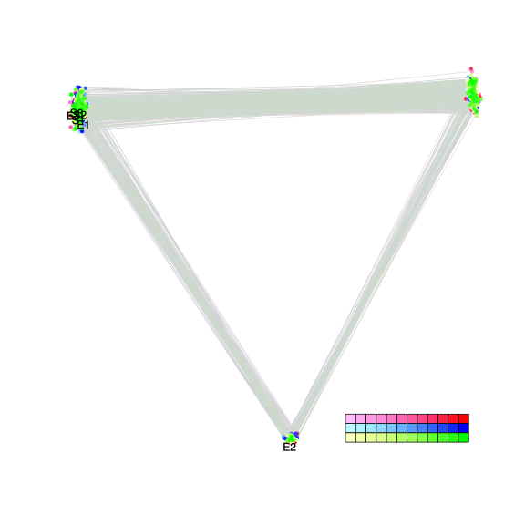
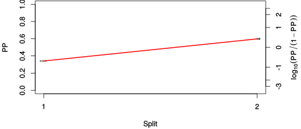
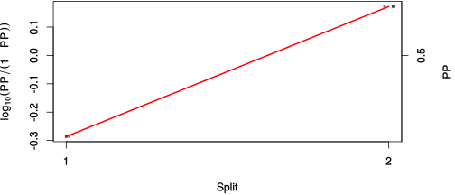

| chain # | burnin | subsample | Iterations (remaining) | command line | subdirectory | directory |
|---|---|---|---|---|---|---|
| 1 | 10000 | 1 | 90000 | bali-phy E7_AA_red3_v2_Alpha.fas -s 38219 -n Alpha_c1 | Alpha_c1-1 | /home/willemse/data/trees/BAli-Phy/red3_v2/E7 |
| 2 | 10000 | 1 | 90000 | bali-phy E7_AA_red3_v2_Alpha.fas -s 45874 -n Alpha_c2 | Alpha_c2-1 | /home/willemse/data/trees/BAli-Phy/red3_v2/E7 |
| 3 | 10000 | 1 | 90000 | bali-phy E7_AA_red3_v2_Alpha.fas -s 27281 -n Alpha_c3 | Alpha_c3-1 | /home/willemse/data/trees/BAli-Phy/red3_v2/E7 |
| P(data|M) = -855.171 +- 0.091 | Complete sample: 3 topologies | 95% Bayesian credible interval: 3 topologies |
Phylogeny Distribution

| Partition support: Summary |
| Partition support graph: SVG |
{kind=link}
| 50% consensus | Newick (+PP) | SVG | |||||
| 66% consensus | Newick (+PP) | SVG | |||||
| 80% consensus | Newick (+PP) | SVG | |||||
| 90% consensus | Newick (+PP) | SVG | |||||
| 95% consensus | Newick (+PP) | SVG | |||||
| 99% consensus | Newick (+PP) | SVG | |||||
| 100% consensus | Newick (+PP) | SVG | |||||
| MAP | Newick (+PP) | SVG | |||||
| greedy | Newick (+PP) | SVG |
{kind=link}
{kind=link}
{kind=link}
{kind=link}
{kind=link}
{kind=link}
{kind=link}
{kind=link}
Alignment Distribution
Partition 1
| Diff | Min. %identity | # Sites | Constant | Informative | ||||
|---|---|---|---|---|---|---|---|---|
| Initial | FASTA | HTML | Diff | 12% | 108 | 8 (7.41%) | 2 (1.85%) | |
| Best (WPD) | FASTA | HTML | AU | 31.2% | 115 | 20 (17.4%) | 3 (2.61%) |
Mixing
{kind=link}
{kind=link}
| burnin (scalar) | ESS (scalar) | ESS (partition) | ASDSF | MSDSF | PSRF-CI80% | PSRF-RCF |
|---|---|---|---|---|---|---|
| 839 | 9916 | 71817.284 | 0.000 | 0.000 | 1.001 | 1.01 |
Projection of RF distances for the first 3 chains3D | Variation of split PPs across chains |
Scalar variables
| Statistic | Median | 95% BCI | ACT | ESS | burnin | PSRF-CI80% | PSRF-RCF |
|---|---|---|---|---|---|---|---|
| prior | -87.64 | (-111.9, -67.9) | 23.68 | 11402 | 230 | 1 | 0.9999 |
| prior_A1 | -62.56 | (-87.28, -47.73) | 10.24 | 26363 | 212 | 0.9998 | 0.9995 |
| likelihood | -844.8 | (-857, -832.5) | 7.896 | 34194 | 195 | 1 | 1.001 |
| logp | -932.6 | (-952.8, -915.7) | 27.23 | 9915 | 600 | 1 | 1 |
| Heat.beta | 1 | ||||||
| Scale1 | 1.939 | (0.5694, 4.649) | 1.046 | 258185 | 43 | 1 | 1.001 |
| S1.F.pi.A | 0.04927 | (0.02643, 0.07627) | 7.672 | 35194 | 441 | 1 | 1.007 |
| S1.F.pi.R | 0.04289 | (0.02051, 0.06993) | 7.951 | 33957 | 387 | 1 | 0.9952 |
| S1.F.pi.N | 0.0459 | (0.02447, 0.072) | 7.723 | 34962 | 552 | 0.9996 | 1.001 |
| S1.F.pi.D | 0.09107 | (0.05718, 0.1296) | 8.237 | 32778 | 354 | 0.9998 | 0.9996 |
| S1.F.pi.C | 0.05303 | (0.02599, 0.08688) | 7.913 | 34123 | 388 | 1 | 0.9968 |
| S1.F.pi.Q | 0.06337 | (0.03733, 0.09265) | 7.911 | 34130 | 839 | 1 | 1.003 |
| S1.F.pi.E | 0.09188 | (0.06031, 0.1267) | 7.847 | 34410 | 363 | 0.9997 | 0.9964 |
| S1.F.pi.G | 0.0315 | (0.01105, 0.0572) | 8.61 | 31359 | 490 | 0.9993 | 0.9935 |
| S1.F.pi.H | 0.02797 | (0.01082, 0.04932) | 8.297 | 32543 | 399 | 1 | 1.001 |
| S1.F.pi.I | 0.03823 | (0.0198, 0.06063) | 8.052 | 33530 | 463 | 1 | 0.9995 |
| S1.F.pi.L | 0.1067 | (0.06955, 0.1487) | 7.418 | 36396 | 313 | 0.9998 | 0.9999 |
| S1.F.pi.K | 0.03353 | (0.01504, 0.05647) | 8.094 | 33358 | 523 | 1 | 1.007 |
| S1.F.pi.M | 0.01364 | (0.003488, 0.02732) | 8.739 | 30895 | 259 | 1 | 0.9936 |
| S1.F.pi.F | 0.01815 | (0.004952, 0.03683) | 8.545 | 31598 | 475 | 0.9998 | 0.9989 |
| S1.F.pi.P | 0.06224 | (0.033, 0.0964) | 8.598 | 31402 | 461 | 1.001 | 0.9972 |
| S1.F.pi.S | 0.04288 | (0.02095, 0.06864) | 8.04 | 33580 | 426 | 1 | 0.9953 |
| S1.F.pi.T | 0.05501 | (0.02988, 0.08366) | 7.843 | 34424 | 450 | 0.9998 | 0.9968 |
| S1.F.pi.W | 0.003274 | (3.933e-08, 0.01394) | 13.07 | 20654 | 344 | 1.001 | 1.01 |
| S1.F.pi.Y | 0.0361 | (0.01402, 0.06387) | 8.066 | 33472 | 356 | 1 | 0.9946 |
| S1.F.pi.V | 0.07034 | (0.04161, 0.1022) | 7.954 | 33945 | 332 | 1 | 0.9977 |
| I1.RS07.meanIndelLengthMinus1 | 3.218 | (0.9548, 7.451) | 3.178 | 84959 | 148 | 0.9999 | 1 |
| I1.RS07.logLambda | -3.944 | (-4.69, -3.192) | 2.617 | 103188 | 109 | 1 | 0.9986 |
| |A1| | 116 | (111, 124) | 7.009 | 38523 | 150 | 0.9 | 0.9993 |
| #indels1 | 8 | (5, 11) | 9.114 | 29624 | 65 | 0.75 | 0.9996 |
| |indels1| | 31 | (24, 45) | 5.665 | 47659 | 107 | 0.9286 | 1.001 |
| #substs1 | 124 | (115, 129) | 6.543 | 41264 | 195 | 0.9 | 0.9991 |
| Scale1*|T| | 2.177 | (1.733, 2.662) | 2.342 | 115266 | 150 | 1 | 1.002 |
| |A| | 116 | (111, 124) | 7.009 | 38523 | 150 | 0.9 | 0.9993 |
| #indels | 8 | (5, 11) | 9.114 | 29624 | 65 | 0.75 | 0.9996 |
| |indels| | 31 | (24, 45) | 5.665 | 47659 | 107 | 0.9286 | 1.001 |
| #substs | 124 | (115, 129) | 6.543 | 41264 | 195 | 0.9 | 0.9991 |
| |T| | 1.126 | (0.2932, 2.474) | 1.013 | 266423 | 43 | 1 | 1.002 |